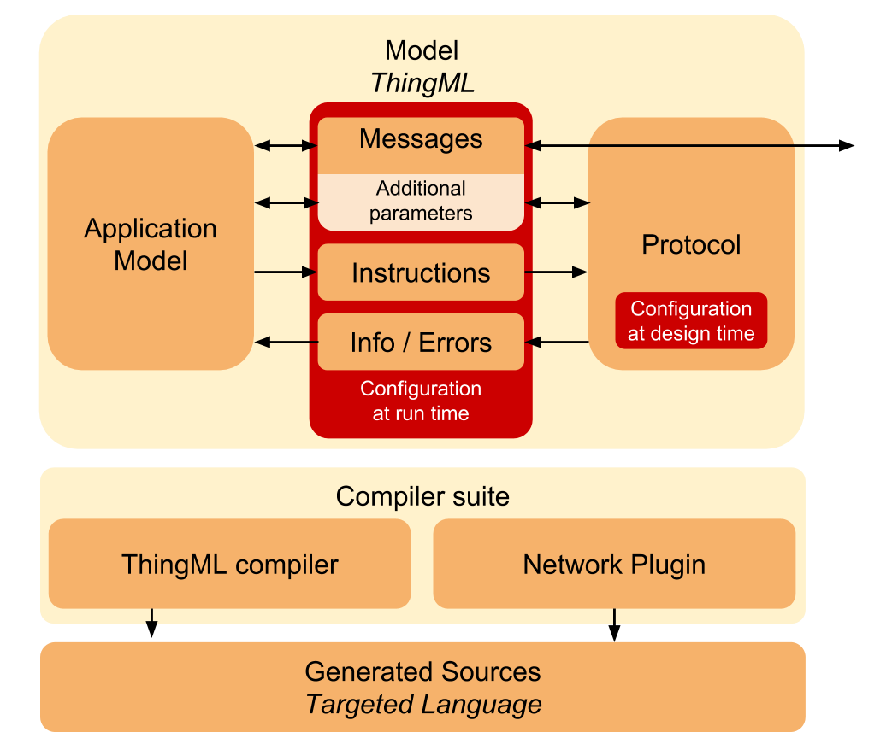

Typically, a ThingML component can be required to communicate with three type of components:
- ThingML system: In some situations, a developer can model applications with ThingML for both ends of the communication. In this case, communication stacks can be fully generated. The code generation framework must be extensible in order to edibility on the choice of the transport protocol.
- Open systems: In some other case, a ThingML component needs to communicate with another software component, whose sources are accessible to the developer. It is either possible to adapt the ThingML end, or to adapt the other one by generating code in its language. In addition to the support of a specific protocol, the code generation framework must also be adaptable in terms of message encoding. Indeed, the encoding must be understandable by the non-ThingML part of the application, or this part must be changed to understand ThingML messages.
- Proprietary systems: In many cases a ThingML component will have to communicate with external closed-source components, whose implementation cannot be modified. In this case, the only option is to adapt the ThingML end both in terms of encoding and transport.
Regardless of the situation, code needs to be generated (at least for the ThingML end) in order to handle the following tasks:
- Encoding/Decoding: In order to exchange data between different platforms, a serialization scheme must be chosen. While there exist numerous solutions and standards, many distributed applications need to leverage several of them. Indeed, the choice among them can be driven by various concerns (bandwidth, human readability). Furthermore, it is not always a choice, in the case where a component needs to communicate with a proprietary system, which already fixed the format for some exchanges.
- Sending/Receiving: Code must be generated to support both message emission and reception adapted to the targeted protocol. For most cases these operations rely heavily on a pre-existing library in the targeted language. But it can require additional aspects depending on the paradigm. For example, for synchronous communications, a message can not necessarily be sent any time, and some queuing might be required.
- Configuration and Link management: Before any message exchange occurs, a network interface has typically to be configured, and depending on the protocol a connection might have to be established. Furthermore, some network paradigms require some additional logic such as keeping track of connected clients.
Network Plugins
Through a set of experiments (Serial, HTTP/REST, MQTT, WebSocket, Bluetooth Low Energy, Z-Wave, etc.) it quickly appears that a part of the complexity coming from these various communication protocols can be hidden from the model, because they are not relevant to the application logic (Automatic re-sending of messages, connection establishment, a part of error management, encryption). Network plugin can generate code handling these "technicalities". Meanwhile, a part of this complexity needs to be exposed to the ThingML code to enable a communication management flexible enough. In order to do so, the ThingML code generation framework differentiates two aspects of communication management (See Figure 10):
- Configuration: Through the mean of annotation on the ThingML keyword protocol, configuration at design time can be provided to the code generator in order to generate a tailor-made network interface.
- Control: A part of the communication handling (such as error management, client management) is inherently dynamic and hence the need for information exchange between the application logic and the generated network library at run time.

Two broad types of annotations can be used to control more precisely a generated library at run time. Annotated messages can be transformed into instructions addressed at the generated network library and not forwarded (for example, a reconnection instruction). Similarly, annotated messages can become feedback originating from the network library and transmitted to the application (for example if the connection has been lost). But additional parameters (that will not be forwarded) can also be added to messages in order to customize at run time the way those messages are forwarded (for example destination information).
thing fragment myMsgs { //Control at run time
message reconnect() @websocket_instruction "reconnect";
message connection_lost() @websocket_feedback "connection_lost";
message msg1(Param : Float, ClientID : UInt16)
@code "101" //ID for serialization purposes
@websocket_client_id "ClientID";
}
protocol Websocket //Configuration at Design time
@websocket_server "true"
@websocket_max_client "16"
@websocket_enable_unicast "true"
@serialization "msgpack"
configuration myCfg {
instance i : myThing // The thing myThing can send
// messages through websocket in a
connector i.myPort over Websocket //transparent way
}
This architecture offers a trade-off between abstraction and customizability. It allows to hide or expose parts of the communication paradigm on demand, depending on what the application requires. It provides a way to extend the ThingML code generation framework for message exchanges, while relying if necessary on serialization plugins described in the following section.
Serialization Plugins
Serialization plugins are in charge of generating both the serialization and parsing of a set of ThingML messages. Note that serialization and parsing are not necessarily perfect mirrors, as ports can be asymmetrical. ThingML provides a default binary and string-based (JSON) serialization and deserialization, available and interoperable in C, JavaScript and Java. A number of experiment has also been conducted on a number of proprietary protocols, such as the Multiwii Serial Protocol used in some drone flight controllers. In order to be flexible enough, the code generation framework must provide a way to integrate rapidly existing native library to enable the use of standard serialization schemes. But it also needs to support custom/proprietary communication protocols, by modelling their existing messages in ThingML and generating code compatible with non-modifiable software and hardware components.Moreover, to meet the various needs of compatibility, a serialization plugin needs to be usable in two different ways:
- It can either be provided to a network plugin in order to generate fully executable code for the ThingML end.-
- It can also be used to generate the methods separately in order to integrate them directly in sources written in the targeted language.
These different usages offer more flexibility on the choice of the end to adapt. One can either adapt the ThingML end of a link, but also the end running a software component written in another language. While enabling this choice, it fits the maintainability requirement as it allows regeneration of code after modification of the set of messages.